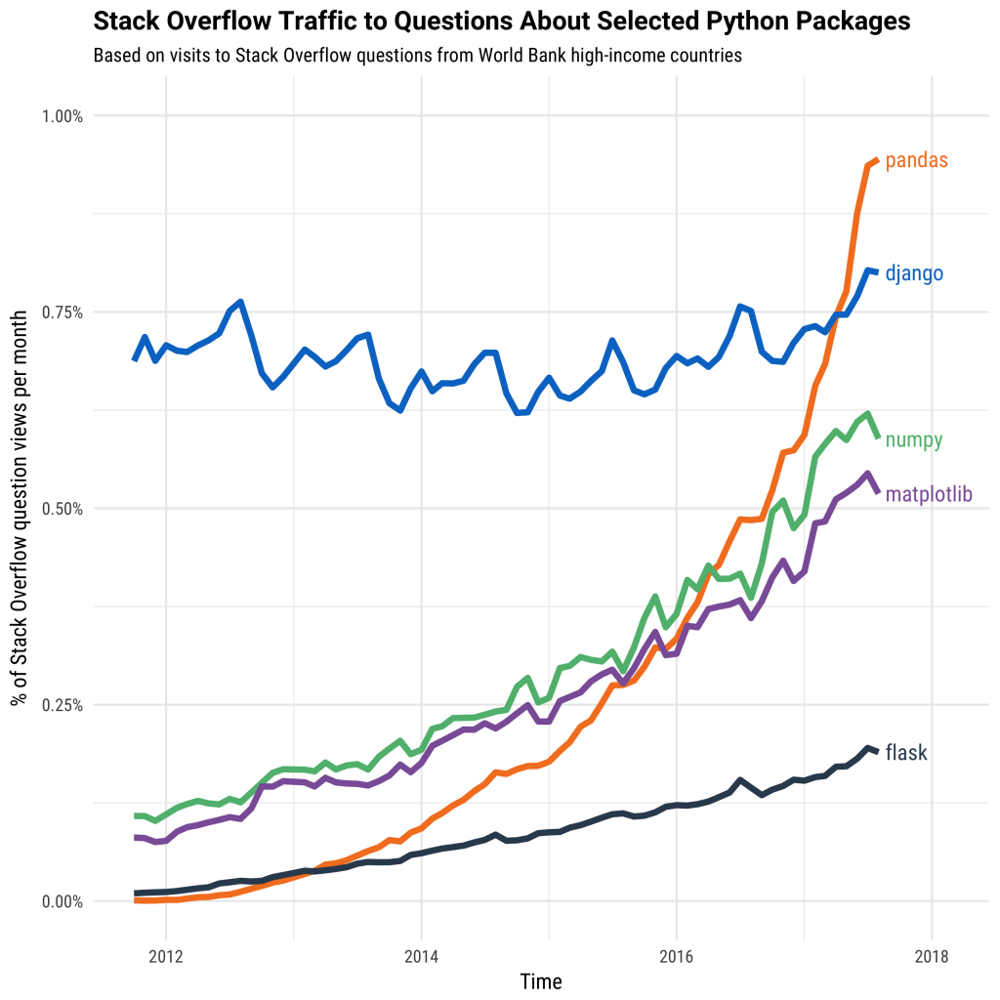

Why Dask?¶
This document gives high-level motivation on why people choose to adopt Dask.
Python’s role in Data Science¶
Python has grown to become the dominant language both in data analytics and general programming:

This is fueled both by computational libraries like Numpy, Pandas, and Scikit-Learn and by a wealth of libraries for visualization, interactive notebooks, collaboration, and so forth.
{kind=link}
However, these packages were not designed to scale beyond a single machine. Dask was developed to scale these packages and the surrounding ecosystem. It works with the existing Python ecosystem to scale it to multi-core machines and distributed clusters.
Dask has a Familiar API¶
Analysts often use tools like Pandas, Scikit-Learn, Numpy, and the rest of the Python ecosystem to analyze data on their personal computer. They like these tools because they are efficient, intuitive, and widely trusted. However, when they choose to apply their analyses to larger datasets, they find that these tools were not designed to scale beyond a single machine. And so, the analyst rewrites their computation using a more scalable tool, often in another language altogether. This rewrite process slows down discovery and causes frustration.
Dask provides ways to scale Pandas, Scikit-Learn, and Numpy workflows more natively, with minimal rewriting. It integrates well with these tools so that it copies most of their API and uses their data structures internally. Moreover, Dask is co-developed with these libraries to ensure that they evolve consistently, minimizing friction when transitioning from a local laptop, to a multi-core workstation, and then to a distributed cluster. Analysts familiar with Pandas/Scikit-Learn/Numpy will be immediately familiar with their Dask equivalents, and have much of their intuition carry over to a scalable context.
Dask Scales out to Clusters¶
As datasets and computations scale faster than CPUs and RAM, we need to find ways to scale our computations across multiple machines. This introduces many new concerns:
How to have computers talk to each other over the network?
How and when to move data between machines?
How to recover from machine failures?
How to deploy on an in-house cluster?
How to deploy on the cloud?
How to deploy on an HPC super-computer?
How to provide an API to this system that users find intuitive?
…
While it is possible to build these systems in-house (and indeed, many exist), many organizations increasingly depend on solutions developed within the open source community. These tend to be more robust, secure, and fully featured without being tended by in-house staff.
Dask solves the problems above. It figures out how to break up large computations and route parts of them efficiently onto distributed hardware. Dask is routinely run on thousand-machine clusters to process hundreds of terabytes of data efficiently within secure environments.
Dask has utilities and documentation on how to deploy in-house, on the cloud, or on HPC super-computers. It supports encryption and authentication using TLS/SSL certificates. It is resilient and can handle the failure of worker nodes gracefully and is elastic, and so can take advantage of new nodes added on-the-fly. Dask includes several user APIs that are used and smoothed over by thousands of researchers across the globe working in different domains.
Dask Scales Down to Single Computers¶
But a massive cluster is not always the right choice
Today’s laptops and workstations are surprisingly powerful and, if used correctly, can handle datasets and computations for which we previously depended on clusters. A modern laptop has a multi-core CPU, 32GB of RAM, and flash-based hard drives that can stream through data several times faster than HDDs or SSDs of even a year or two ago.
As a result, Dask can empower analysts to manipulate 100GB+ datasets on their laptop or 1TB+ datasets on a workstation without bothering with the cluster at all. This can be preferable for the following reasons:
They can use their local software environment, rather than being constrained by what is available on the cluster or having to manage Docker images.
They can more easily work while in transit, at a coffee shop, or at home away from the corporate network
Debugging errors and analyzing performance is simpler and more pleasant on a single machine
Their iteration cycles can be faster
Their computations may be more efficient because all of the data is local and doesn’t need to flow through the network or between separate processes
Dask can enable efficient parallel computations on single machines by leveraging their multi-core CPUs and streaming data efficiently from disk. It can run on a distributed cluster, but it doesn’t have to. Dask allows you to swap out the cluster for single-machine schedulers which are surprisingly lightweight, require no setup, and can run entirely within the same process as the user’s session.
To avoid excess memory use, Dask is good at finding ways to evaluate computations in a low-memory footprint when possible by pulling in chunks of data from disk, doing the necessary processing, and throwing away intermediate values as quickly as possible. This lets analysts perform computations on moderately large datasets (100GB+) even on relatively low-power laptops. This requires no configuration and no setup, meaning that adding Dask to a single-machine computation adds very little cognitive overhead.
Dask is installed by default with Anaconda and so is already deployed on most data science machines.
Dask Integrates Natively with Python Code¶
Python includes computational libraries like Numpy, Pandas, and Scikit-Learn, and many others for data access, plotting, statistics, image and signal processing, and more. These libraries work together seamlessly to produce a cohesive ecosystem of packages that co-evolve to meet the needs of analysts in most domains today.
This ecosystem is tied together by common standards and protocols to which everyone adheres, which allows these packages to benefit each other in surprising and delightful ways.
Dask evolved from within this ecosystem. It abides by these standards and protocols and actively engages in community efforts to push forward new ones. This enables the rest of the ecosystem to benefit from parallel and distributed computing with minimal coordination. Dask does not seek to disrupt or displace the existing ecosystem, but rather to complement and benefit it from within.
As a result, Dask development is pushed forward by developer communities from Pandas, Numpy, Scikit-Learn, Scikit-Image, Jupyter, and others. This engagement from the broader community growth helps users to trust the project and helps to ensure that the Python ecosystem will continue to evolve in a smooth and sustainable manner.
Dask Supports Complex Applications¶
Some parallel computations are simple and just apply the same routine onto many inputs without any kind of coordination. These are simple to parallelize with any system.
Somewhat more complex computations can be expressed with the map-shuffle-reduce pattern popularized by Hadoop and Spark. This is often sufficient to do most data cleaning tasks, database-style queries, and some lightweight machine learning algorithms.
However, more complex parallel computations exist which do not fit into these paradigms, and so are difficult to perform with traditional big-data technologies. These include more advanced algorithms for statistics or machine learning, time series or local operations, or bespoke parallelism often found within the systems of large enterprises.
Many companies and institutions today have problems which are clearly parallelizable, but not clearly transformable into a big DataFrame computation. Today these companies tend to solve their problems either by writing custom code with low-level systems like MPI, ZeroMQ, or sockets and complex queuing systems, or by shoving their problem into a standard big-data technology like MapReduce or Spark, and hoping for the best.
Dask helps to resolve these situations by exposing low-level APIs to its internal task scheduler which is capable of executing very advanced computations. This gives engineers within the institution the ability to build their own parallel computing system using the same engine that powers Dask’s arrays, DataFrames, and machine learning algorithms, but now with the institution’s own custom logic. This allows engineers to keep complex business logic in-house while still relying on Dask to handle network communication, load balancing, resilience, diagnostics, etc..
Dask Delivers Responsive Feedback¶
Because everything happens remotely, interactive parallel computing can be frustrating for users. They don’t have a good sense of how computations are progressing, what might be going wrong, or what parts of their code should they focus on for performance. The added distance between a user and their computation can drastically affect how quickly they are able to identify and resolve bugs and performance problems, which can drastically increase their time to solution.
Dask keeps users informed and content with a suite of helpful diagnostic and investigative tools including the following:
A real-time and responsive dashboard that shows current progress, communication costs, memory use, and more, updated every 100ms
A statistical profiler installed on every worker that polls each thread every 10ms to determine which lines in your code are taking up the most time across your entire computation
An embedded IPython kernel in every worker and the scheduler, allowing users to directly investigate the state of their computation with a pop-up terminal
The ability to reraise errors locally, so that they can use the traditional debugging tools to which they are accustomed, even when the error happens remotely
Links and More Information¶
From here you may want to read about some of our more common introductory content: